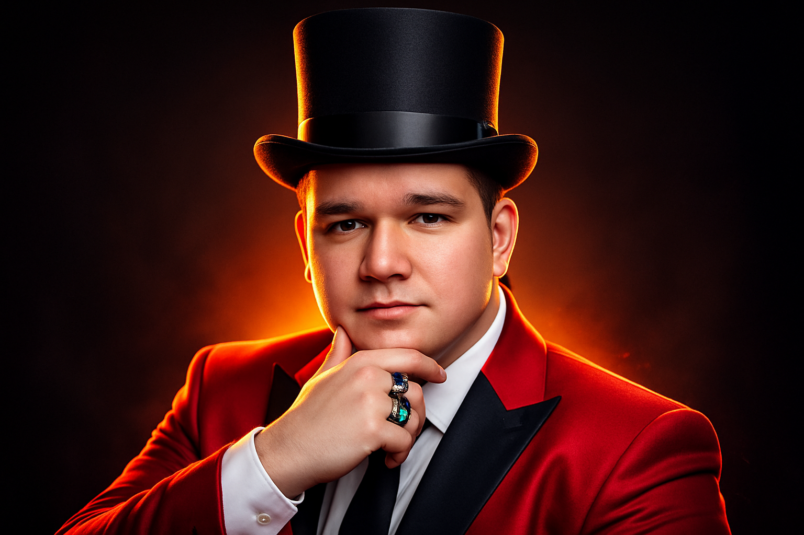
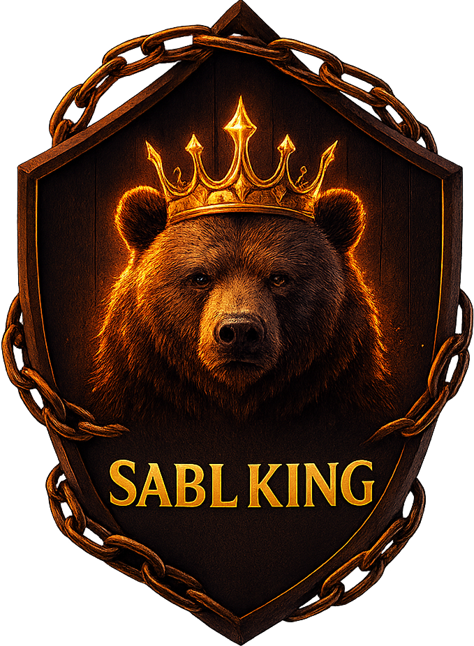
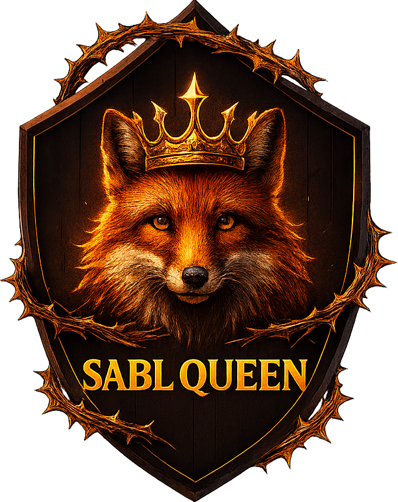
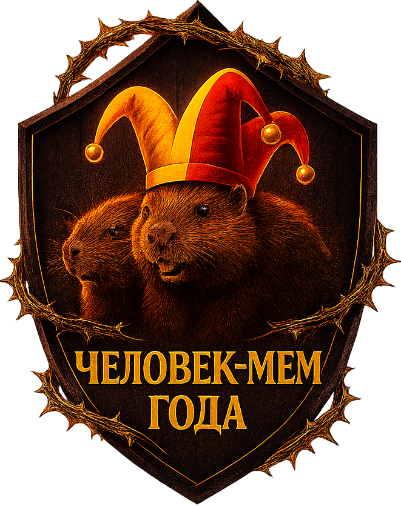
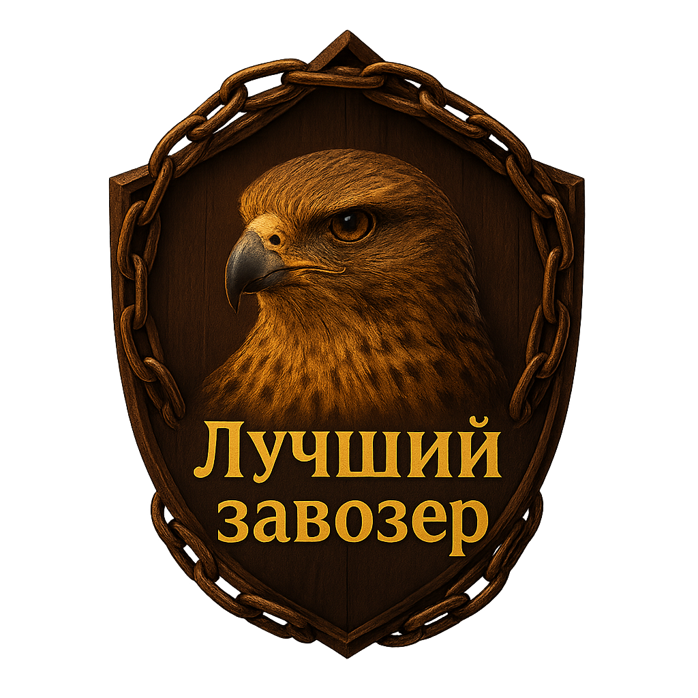
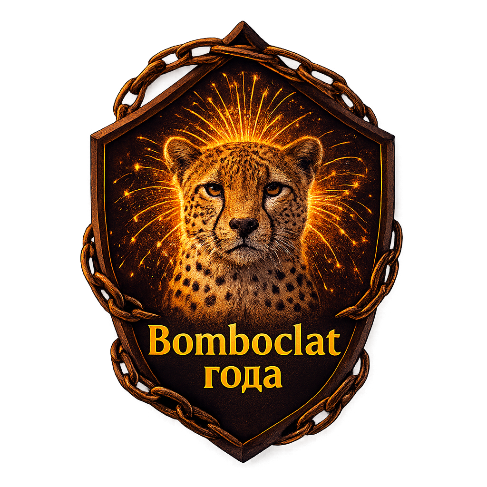
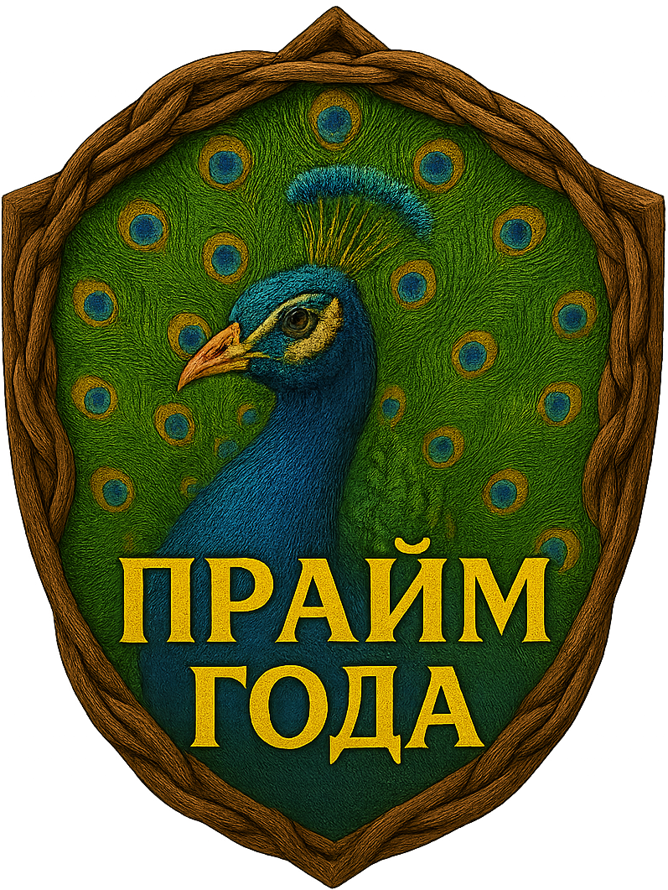

Новости премии SABL2026

Всё про тоже, не все функции компьютерной версии доступны на телефоне.
Сайт премии SABL обновлён до версии 1.8
Мишаня объявил, что сайт премии SABL обновлён. Вот что добавили:
- Если кто не понял, то квест полностью готов и можно его пройти.
- Теперь можно посмотреть описания основных номинации SABL2026.
- На сайте появилась прямая ссылка на запись SABL2025.
- Сделаны картинки номинации через ChatGPT.
- Изменены этапы премии SABL2026.
Всё про тоже, не все функции компьютерной версии доступны на телефоне.
Главный организатор премии SABL расказал кое-что:
Официальные приглашения были направлены тем, кто уже не учиться в Лицее. Такое решение принял основной состав первой премии SABL2025.
Главный организатор премии SABL сообщает:
Идёт начало внедрения новых одноклассников в премию SABL2026. Первым стал Артём Пушкин, а вторым стал Илья Перов. Они уже высказали своё мнение про премию в телеграм канале премии...
Мишаня возвращается в 1535.
Организатор премии SABL2025 - Мишаня сообщил, что возвращается в лицей.
У премии появился ТГ канал
Организатор премии SABL2025 - Мишаня сообщил, что вместе с Егором Насолдиным, они организовали ТГ канал...
6 основных номинаций премии






Ссылка на Голосование
Чтобы проголосовать следуйте данным шагам
- Пройдите по ссылке на сайт премии
- С помощью навигации найдите раздел "Номинации"
- В день различных голосований будет открываться доступ к ним, где можно будет проголосовать